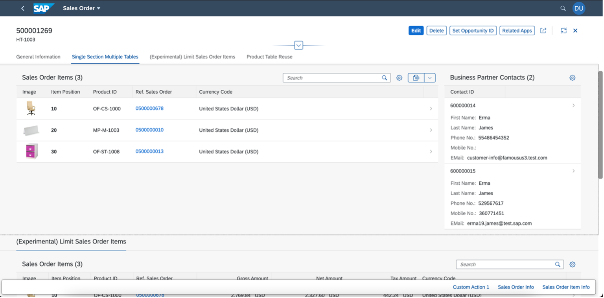
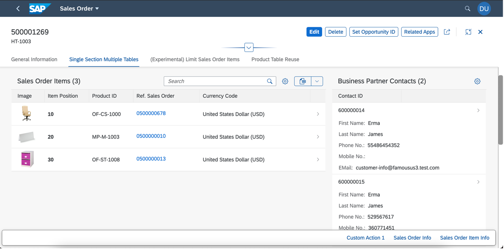
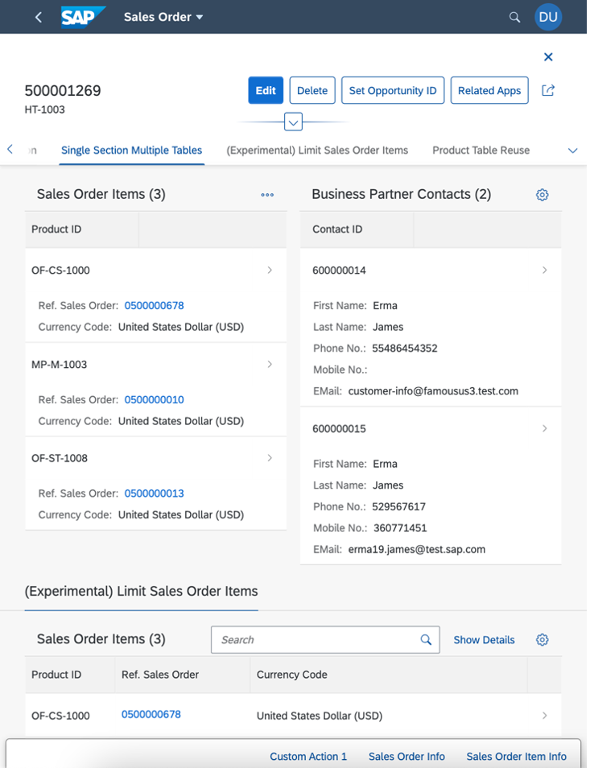
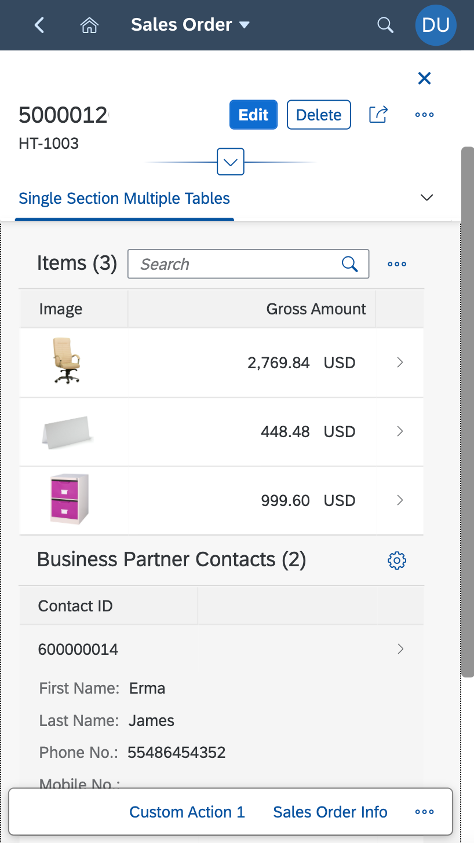

To achieve this, add the annotations as shown below:
<Record Type="UI.CollectionFacet">
<PropertyValue Property="Label" String="Single Section Multiple Tables" />
<PropertyValue Property="ID" String="MultiTable" />
<PropertyValue Property="Facets">
<Collection>
<Record Type="UI.ReferenceFacet">
<PropertyValue Property="Label" String="Sales Order Items" />
<PropertyValue Property="ID" String="SalesOrderItemsID" />
<PropertyValue Property="Target" AnnotationPath="to_Item/@UI.LineItem#SalesOrderItem" />
<Annotation Term="UI.Importance" EnumMember="UI.ImportanceType/High" />
</Record>
<Record Type="UI.ReferenceFacet">
<PropertyValue Property="Label" String="Contacts" />
<PropertyValue Property="ID" String="ContactsID" />
<PropertyValue Property="Target" AnnotationPath="to_BPAContact/@UI.LineItem" />
<Annotation Term="UI.Importance" EnumMember="UI.ImportanceType/High" />
</Record>
</Collection>
</PropertyValue>
</Record>
Depending on the available container/screen size, the two tables adjust their respective widths as follows:
For extra large (XL) container/screen size, for example, large desktops, the first table occupies 75% and the second table occupies 25% of the space.
For large (L) container/screen size, for example, desktops, the first table occupies 66.66% and the second table occupies 33.33% of the space.
For medium (M) container/screen size, for example, tablets, the first table and the second table occupy 50% each of the space.
For small (S) container/screen size, for example, mobiles, the tables appear one below the other.

Please note that this topic is currently only applicable to SAP Fiori elements for OData V2.